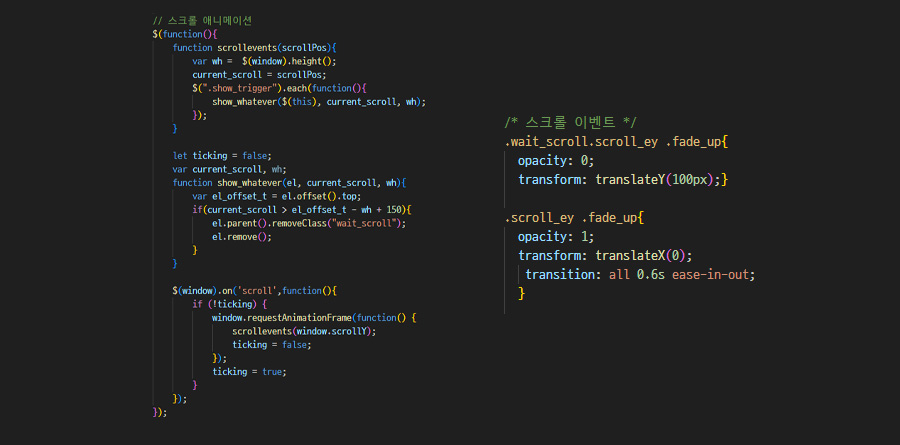

Overview
나는 이 포트폴리오를 통해
어떤 내용을 전달하고 싶은 걸까?
저는 수많은 포트폴리오 속에서 면접관님께 새로운 경험을 선사하며 인상적인 사람으로 기억되고 싶었습니다. 그렇기에 단순한 결과물이 아닌, 배우고 시도하며 발전해온 과정과 저만의 색깔을 담아내는 것에 집중했습니다.
Portfolio Vision
나를 상징하는건 바로 ‘성장’!
저는 성장에 대한 욕심을 가지고 있습니다. 매일 배우고, 도전하며, 나아가고 있는 이 여정은 앞으로도 계속될 것입니다. 이 포트폴리오는 그런 여정을 기록하고, 그 과정에서 얻은 경험과 배움을 면접관님께 보여드리고자 기획하였습니다.
Point 01
디자인 컨셉
차별화된 컨셉과 감각적인 레이아웃으로, 포트폴리오에 독창적인 매력을 더해 강한 인상을 남기기
Point 02
풍부한 컨텐츠
나에 대한 많은 내용을 보여주되, 스크롤 길이가 불필요하게 길어지지 않도록 레이아웃을 구성
Point 03
정보 전달
핵심 내용을 빠르게 파악할 수 있도록, 간결하고 직관적인 레이아웃으로 구성
Design Concept
애플처럼, 끊임없이 성장하는 나
끝없이 성장하는 저를 표현하기 위해, 과거부터 지속적으로 발전해온 애플의 디자인 컨셉을 채택했습니다. ‘성장’이라는 주제와 함께 애플의 미니멀하고 직관적인 디자인을 통해 디자인적 재미는 물론, 가독성도 높일 수 있을 것이라고 생각했습니다.
Design System
Typrograhpy
Color
-
#2181FA
-
#111111
-
#2C2C2C
-
#777777
-
#F5F5F7
-
#FFFFFF
컨셉에 맞게 깔끔하고 현대적인 Inter와 Spoqa Han Sans Neo 폰트를 사용하였습니다. 블랙 & 그레이 계열로 안정감을 유지하고, 포인트 컬러인 블루를 활용하여 세련된 느낌을 더했습니다.
Publishing
부드러운 스크롤
스크롤 감지 이벤트
컨텐츠 전환
프로그레스바
페이지의 미니멀한 컨셉과 어울리는 lenis 스크립트를 이용해 부드럽고 일정한 스크롤 효과를 주었습니다.
